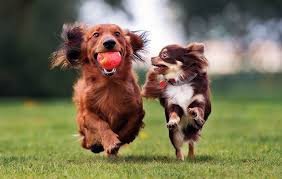
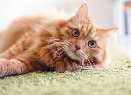
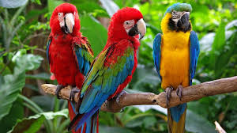

The dog (Canis familiaris or Canis lupus familiaris) is a domesticated descendant of the wolf.
The cat (Felis catus), also referred to as the domestic cat, is a small domesticated carnivorous mammal.
Parrots (Psittaciformes), also known as psittacines are birds with a strong curved beak, upright stance, and clawed feet.
